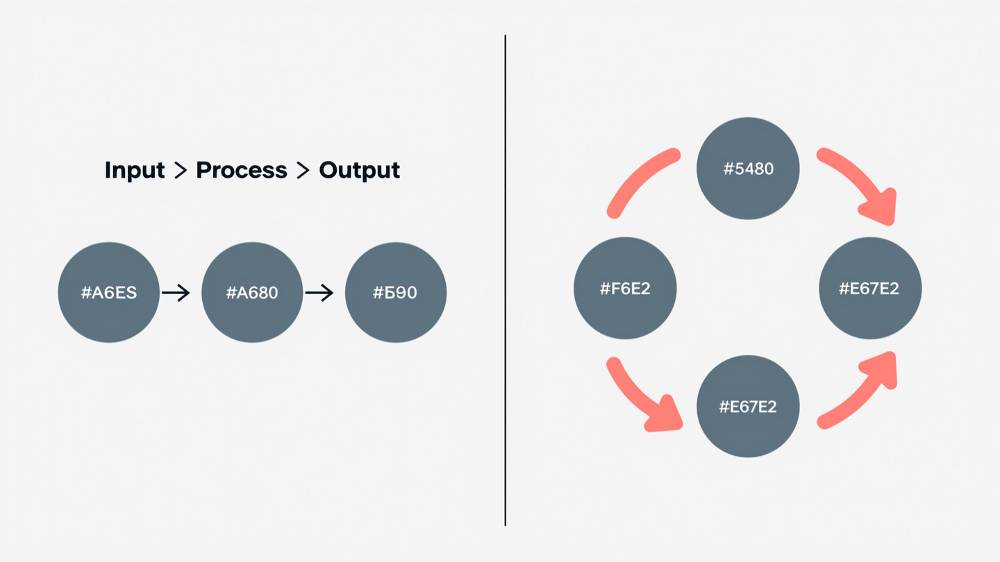
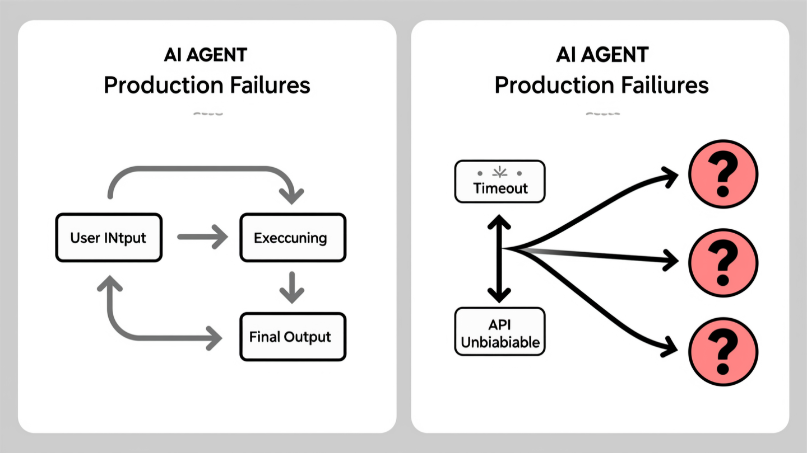
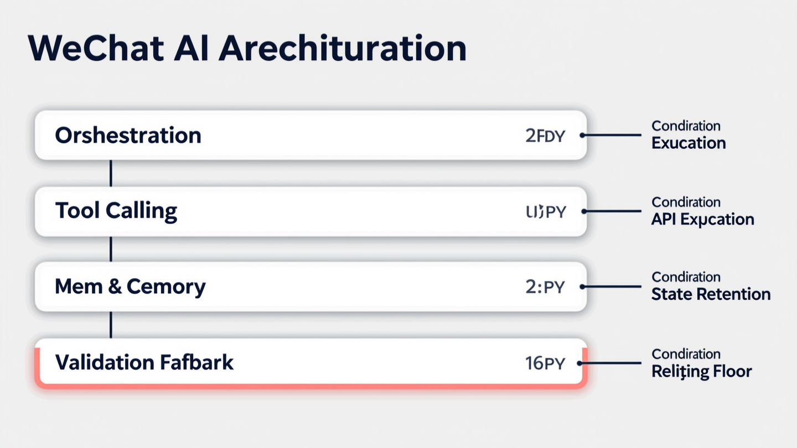
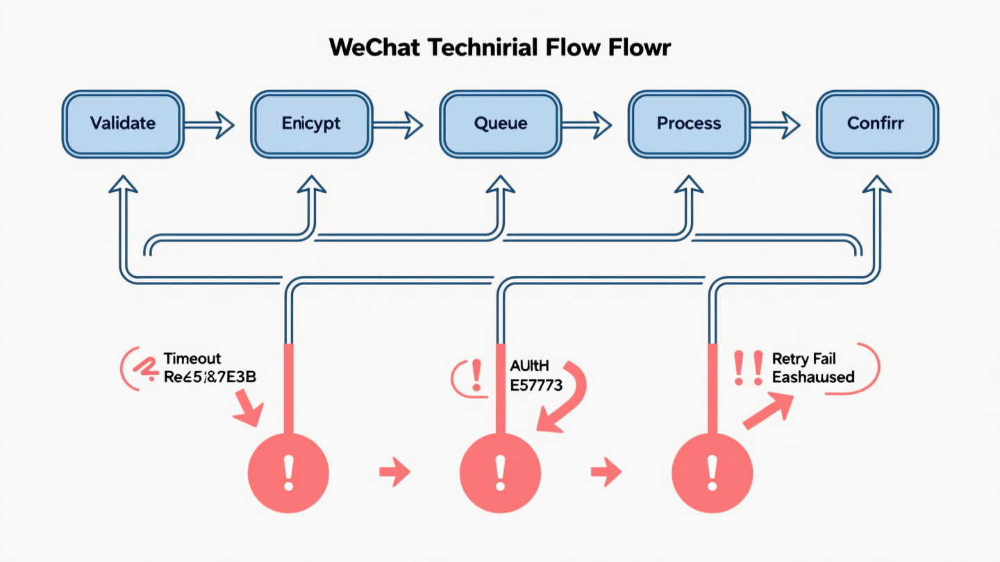

THE SIGNAL REVIEW
深度分析
2026 年 11 月 7 日 · 星期六
FutureLearning · 长文拆解
ANALYSIS · 深读
AI Agent 工作流：从能跑到好用差了什么
你在本地写了个 Agent，给它一段需求，它能自己搜资料、调工具、整理成稿，跑十次有八次结果不错。接进真实业务之后，成功率掉到三四成，同一套代码，同一版模型，差别只在输入和环境。
这篇想聊的就是这个落差。我不想罗列 Agent 的名词，而是想把一件事讲清楚：稳定的 Agent 工作流，究竟靠什么撑起来，以及哪些场景其实根本不该用它。

单次调用与 Agent 工作流的差别：顺序固定 vs 可回流 | AI 生成
PART 01 · Demo 能跑、上线就崩：问题到底出在哪
先说一个几乎每个做过 Agent 的人都遇到过的场景。

单次调用与真实业务的路径差异 | AI 生成
你在本地写了个 Agent：给它一段需求，它能自己搜资料、调工具、整理成稿，跑十次有八次结果不错。你信心满满地接进业务系统，让真实用户来用，结果成功率直接掉到三四成。同一套代码，同一版模型，差别只在输入和环境。
这时候很容易得出一个结论：模型还不够强，等下一代模型出来就好了。但把失败样本一条条翻出来看，会发现很多问题跟模型能力没什么关系——是流程本身没有给错误留出口。通常至少有三个来源在同时起作用。
输入不可控
真实用户的表达千差万别：同一件事有十种说法，有的带错别字，有的省略了关键前提，有的把两件事混在一句话里。demo 里你手写的输入是精心裁剪过的，真实输入不是。模型第一步理解偏了，后面每一步都在错误的前提上继续往下跑。
中间步骤不可观测
模型为什么选了那个工具、为什么跳过了一步，你看不到。链路一长，你只能看到最终结果不对，却定位不到是哪一步开始偏的。没有观测就没有调试，没有调试就只能靠换模型碰运气。
失败不可回滚
单次调用失败了，重试一次就行。但工作流是多步串联的：第三步用了第二步的错误输出，第五步又基于第三步往下推。一个早期错误会被逐层放大，等到你发现时，已经找不到该退回到哪个点。
把这三件事放在一起看，会发现它们指向同一个根：我们只给了模型一个目标，却没给它一套能收敛的流程。目标告诉它「要做什么」，流程才决定它「怎么做才不会一路错到底」。
设计工作流的本质，是把「希望模型做对」改造成「让流程不容易做错」。
所以接下来要讨论的不是「怎么写出更好的 prompt」，而是「怎么搭一套结构」。不过在拆结构之前，得先弄清楚一件事：我们说的工作流，到底指什么。
PART 02 · Agent 工作流是什么，又不是什么
「Agent 工作流」这个词现在被用得很宽，几乎什么都能往里装。有必要先划一下边界，不然讨论会一直飘着。
一个比较可操作的界定是：工作流是「模型决策 + 工具执行 + 状态传递 + 结果校验」组成的循环结构。注意两个关键词——**循环**和**有限选项**。模型负责在几个明确的候选里做判断，而不是包办从理解需求到最终输出的全部环节。
工作流不是让模型自由发挥，而是给模型划出一小块需要判断的地方，其余部分交给确定的代码。
和最常见的 prompt chain 比，差别在「顺序是否可变」。链式提示是一条固定流水线：第一步的输出喂给第二步，第二步喂给第三步，顺序写死在代码里。工作流允许根据中间结果改变下一步走向——检查不通过就退回重做，信息不够就再调一次工具。前者是文本传递，后者是控制流。
和 RPA 比，差别在「输入是否结构化」。RPA 擅长规则确定、输入格式固定的流程，比如把一张固定格式的表单录进系统。这类事情交给模型反而是退步：更慢、更贵，还不稳定。Agent 工作流真正有价值的环节，是需要语义理解和临场判断的地方——比如从一段自由文本里判断用户到底想要什么。
这条边界值得反复强调：**不是所有流程都值得引入模型判断**。每多一个判断点，就多一份成本和不确定性。如果一条链路里有五处需要模型决策，而其中三处其实用 if-else 就能写清楚，那这三处基本是在给自己制造麻烦。
把这个界定想清楚之后，下一个问题就自然浮出来了：一个真能跑住的工作流，内部到底长什么样？
PART 03 · 一个能用的工作流，由哪几层撑起来
如果把那些跑得比较稳的 Agent 工作流拆开来看，会发现它们的结构其实相当像，大致都能分成四层。每层解决一类特定问题，也对应一类特定的失控方式。

Agent 工作流的四层结构 | AI 生成
先说清楚一点：这四层不是行业标准，更像是一份实践中的共识清单。层与层之间的顺序也有讲究——越靠下的层出问题，代价越大，也越难补救。
目标与任务分解
把模糊需求拆成有明确完成标准的子任务。这里的「明确完成标准」很关键：不是「整理一下资料」，而是「输出一份包含五个要点、每个要点标注出处的小结」。标准越具体，模型自由发挥的空间越小，你也越容易判断它到底做完了没有。这一层失控，模型就会在开放式目标里绕圈，单步负担过重。
工具与权限
给模型的能力边界要窄而清楚。工具描述写明白它做什么、不做什么；入参做校验；可调用的范围显式约束。一个既能读全库又能写全库的工具，等于把权限整个交了出去。这一层失控，会出现误调用和越权操作，而且事后很难追溯是哪一步发生的。
状态与记忆
明确什么信息需要在步骤之间传递、什么要落盘、什么应该直接丢掉。很多工作流跑到后半段判断开始漂移，不是模型变笨了，而是上下文里塞了太多无关信息，把关键约束淹没了。这一层失控，表现就是越到后面越糊涂，前面说过的要求后面全忘。
校验与兜底
为关键节点设置可以自动判定的检查条件，以及失败出口：重试、降级、转人工。这一层最容易被跳过，因为它不产生「能力」，只产生「稳定」。但没有它，前面三层做得再好也只是把失败概率往后推，最终还是会在用户面前爆掉。
这四层里，前三层决定了工作流的上限，第四层决定了它的下限。而在真实业务里，决定一个 Agent 能不能上线的，往往不是上限，而是下限。
结构讲到这里还是有点抽象。放到一条具体链路上完整走一遍，会清楚很多。
PART 04 · 放进具体流程里：一次任务是怎么跑完的
举一个通用场景：让 Agent 收集某个方向的资料，整理成一份带出处的简报。这个任务足够常见，也足够暴露问题。

资料整理链路与三类失败分支 | AI 生成
整条链路大概是这样的：先理解需求（主题是什么、要多长、给谁看），再拆成子任务（确定检索方向、逐个方向取数、筛掉不相关的内容、按结构汇总），然后调用工具取数，对中间结果做检查，最后汇总输出。
这条链路看着不算复杂，但在实践里，有三个位置特别容易崩。而且三个都不是「模型不够聪明」造成的。
任务拆解过粗
如果第一步只拆出「去查资料」这一个子任务，模型就会把检索、判断、整理全压在一次调用里。结果是它抓到什么就写什么，覆盖不全，中途也没法干预。拆细一点：先列出五到八个检索方向，再逐个方向单独跑。单步负担降下来，可控性立刻不一样。
工具返回与预期不符
你以为搜索工具返回的是结构化的标题加摘要，实际返回的是一大段带导航栏和广告的网页文本。模型拿到之后要么解析失败，要么被无关内容带偏。对应的动作很朴素：在工具和模型之间加一层结果规整，把返回值裁成预期格式，解析不了就直接报错，别让模型去猜。
早期错误被逐层放大
第一步把主题理解偏了，后面五个检索方向全是白跑。等最后汇总时你才发现不对，五个方向的成本已经付出去了。对应的动作是在阶段之间设检查点：方向列出来之后先确认一遍，再开始检索。多花几秒钟，省掉整轮返工。
这三个点有个共同特征：对应的解法都不是「换更强的模型」，而是「在合适的位置加一道检查」。所以这条链路的可靠性，更多来自检查点的密度，而不是模型的聪明程度。
编辑观点：一个有点反直觉的经验
把模型的自主范围收窄，反而会让它看起来更聪明。因为每一步的判断空间小了，出错的概率就低了，整体表现自然就稳。很多人觉得限制模型是浪费能力，实际上限制的是出错的空间。
聊到这里，很自然会冒出一个反问：既然设计一条稳定的链路这么麻烦，是不是有些场景干脆别上 Agent？
PART 05 · 什么时候不该用 Agent，以及该从哪开始
前面聊的都是「怎么做好」，但更值钱的问题可能是「要不要做」。
确实有几类场景，引入 Agent 是明显的负收益。规则完全确定的流程，if-else 更快更便宜；错误代价极高且不可回滚的环节，比如直接对外付款、直接改生产数据，现阶段不适合交给模型；调用量极大而单次判断价值有限的场景，比如每天几百万次的简单分类，用模型做账也算不过来。
编辑观点：判断一个环节该不该上 Agent，我会先问两个问题
第一，这一步是否真的需要语义判断？如果规则能写清楚，就不要引入模型，规则永远比判断便宜、稳定、可测。
第二，出错之后能不能被发现和纠正？如果答案是不能，那要么先把发现机制补上，要么暂时别做这一步。
两个问题都成立，才值得引入模型决策。只满足一个的时候，通常还有更省事的方案。
起步的方式也有讲究。比较稳的做法是从单点、高频、可人工复核的环节切进去——先让它跑在一个有人盯着的小口径里，把校验和观测搭起来。等这条链路的失败模式你摸清楚了，再逐步扩大它的自主范围。反过来，一上来就做端到端全自动，通常会在第一次真实故障之后被整个下线。
这条路线上值得记住的四件事
换句话说，Agent 工作流的成熟度，最终体现的是团队对失败的处理能力，而不是模型参数的升级速度。模型会持续变强，流程里那些检查点、观测和出口，还是得有人一步步设计出来。
结论
回到最开始那个现象：demo 能跑、上线就崩。崩的往往不是模型，而是我们默认了「给它一个目标，它就该做对」。把不确定的模型能力放进确定的流程里——明确目标、约束工具、管理状态、设置校验——它才可能稳定产出。需要说明的是，文中这套四层结构是一次实践总结，不是行业规范；不同团队按自己的失败代价去调整就好。
如果你正在踩这个坑，不妨先数一数：你现在的链路里，有几个真正的检查点？
THE SIGNAL REVIEW · 深度分析
单一主题 · 深入拆解 · 观点提炼
by FutureLearning · 2026.11.07